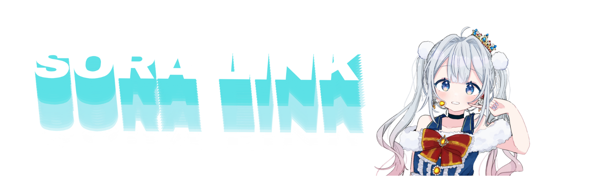

M!lK / ザッツ！超常【踊ってみた】
動画の見所や大変だったところを書く場所。VRChat上でM!lKの「ザッツ！超常」を踊ってみました！
バブリン with こるこに【2人で踊ってみた】
お友達のこるこにさんと一緒にHIMEHINAちゃんの「バブリン」を踊りました！息ぴったりな動きに注目です！
グリズリーに襲われたら♡【踊ってみた】
VRChat上で大好きなアイドルソングを踊ってみました！表情やポーズの可愛さにこだわりました！

動画の見所や大変だったところを書く場所。VRChat上でM!lKの「ザッツ！超常」を踊ってみました！
お友達のこるこにさんと一緒にHIMEHINAちゃんの「バブリン」を踊りました！息ぴったりな動きに注目です！
VRChat上で大好きなアイドルソングを踊ってみました！表情やポーズの可愛さにこだわりました！